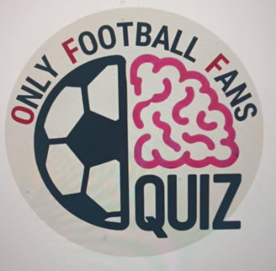

Question 1 of 21
Category Stage
Previous
Reveal Answer
Next
ΚΥΠΡΙΑΚΟ
x1 Points
x1
1
2
3
4
5
Άκουσε την ηχογράφηση και απάντησε την ερώτηση
Your browser does not support the video tag.
Παρακολούθησε το βίντεο και απάντησε την ερώτηση